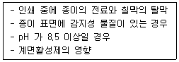

인쇄기사 (2011-06-12 기출문제)
1과목: 인쇄공학
1. 다음과 같은 원인과 가장 관계있는 인쇄사고는?

- 뒤묻음
- 겹붙음
- 배어남
- 바탕더러움
(정답률: 알수없음)

2. 책의 발행 년월일, 저자, 출판사 주소, 등록번호, 가격 등 출판에 관한 사항을 기재한 인쇄 면을 무엇이라 하는가?
- 판권장(colophon)
- 표제지(title page)
- 동정(outside)
- 헛장(fly leaves)
(정답률: 알수없음)
3. 임계표면장력은 cosθ 값이 얼마일 때를 말하는가?
- 0
- 0.5
- 1.0
- 2.0
(정답률: 알수없음)
4. 컬러 그라비어 인쇄 시 발생할 수 있는 인쇄사고의 원인 중 판메임의 원인에 해당되지 않는 것은?
- 잉크 오목부분의 건조 현상
- 잉크 내의 이물질 포함
- 잉크건조 속도가 빠름
- 잉크 용제의 과다
(정답률: 73%)
5. 잉크의 전이특성을 검사하기 위해 아트지의 표면 거칠음을 분석하고자 한다. 다음 중 적합하지 않은 실험기기는?
- Laser Beam을 이용한 비접촉식 Stylus 측정기
- 기공도 측정기(porosity Tester)
- 거칠음 측정기(Roughness Tester)
- 측침식 표면 측정기
(정답률: 70%)
6. 인쇄 작업실의 공조조건으로 가장 적절한 것은?
- 여름의 경우 온도 23℃, 습도 60% 유지
- 겨울의 경우 온도 18℃, 습도 40% 유지
- 계절에 상관없이 온도 18℃, 습도 60% 유지
- 봄과 가을의 경우 온도 20℃, 습도 40% 유지
(정답률: 90%)
7. 다음 중 안료나 염료 등을 비이클에 담갔을 때 젖는 현상과 관계있는 것은?
- 접착 젖음
- 침투 젖음
- 침적 젖음
- 확산 젖음
(정답률: 알수없음)
8. 미스팅(Misting)에 영향을 주는 요인이 아닌 것은?
- 인쇄 속도가 증가하면 Misting은 증가한다.
- 인쇄실의 습도가 증가하면 Misting은 증가한다.
- 롤러 상의 잉크 피막이 두꺼울수록 Misting은 증가한다.
- 롤러상에서 잉크 필라멘트가 한 군데 이상 끊어지기 때문에 발생된다.
(정답률: 62%)
9. 다색 인쇄에서 잉크의 색상별 인쇄 순서와 가장 거리가 먼 것은?
- 각 색상별 잉크의 점탄성
- 각 색상별 잉크의 투명성
- 각 색상별 잉크의 택크
- 각 색상별 잉크의 화학반응성 및 빛쬠량
(정답률: 80%)
10. 고점도의 인쇄잉크를 교반기의 유리막대를 이용하여 빠른 속도로 저으면 잉크가 막대를 타고 올라온다. 다음 중 이러한 현상과 관련있는 효과는?
- 와이젠버그(Weissenberg) 효과
- 빙햄(Bingham) 효과
- 포이즐리(Poiseuille) 효과
- 맥스웰(Maxwell) 효과
(정답률: 67%)
11. 제책의 공정에서 속장과 겉장을 연결하는 부분이며 속장의 내구성을 좌우하는 중요한 공정은?
- 접기(folding)
- 면지 붙이기(end paper)
- 고르기(pressing)
- 굳힘(gluing)
(정답률: 알수없음)
12. 인쇄 도중 종이의 뜯김 현상에 대한 설명으로 틀린 것은?
- 실내온도가 올라가면 종이의 뜯김 현상이 낮아진다.
- 종이의 수분이나 pH, 표면 사이징 등도 약간씩 영향이 있다.
- 금속판 보다 유연한 고무판을 사용할 때 뜯김 현상은 커진다.
- 인쇄 압력이 증가하면 종이의 뜯김 현상이 증가한다.
(정답률: 알수없음)
13. 앙점 면적률이 80%인 인쇄물의 하프톤 값(Halftone value)은?
- 20%
- 80%
- 120%
- 180%
(정답률: 90%)
14. 어떤 물질이 외력의 방향에 대하여 정면으로 대항하는 저항력은 무엇인가?
- 벡터 스트레스(vector stress)
- 전단 스트레스(shear stress)
- 유체 스트레스(fluid stress)
- 노르말 스트레스(normal stress)
(정답률: 70%)
15. 인쇄실의 온도와 습도가 변할 때 일어나는 현상으로 옳은 것은?
- 인쇄실의 온도가 올라가면 거의 모든 바니쉬의 점도가 높아진다.
- 인쇄실의 온도가 올라가면 거의 모든 잉크의 택값이 똑같이 높아진다.
- 인쇄실의 습도가 올라가면 불쾌지수가 낮아진다.
- 인쇄실의 습도가 올라가면 증발형 잉크의 건조속도가 늦어진다.
(정답률: 알수없음)
16. 점탄성에 대한 설명으로 틀린 것은?
- 물체에 급속히 외력을 가하면 탄성적인 거동을 한다.
- 물체에 천천히 외력을 가하면 점성적인 거동을 한다.
- 탄성과 점성을 겸비한 물질은 후크의 법칙으로 설명된다.
- 동적 탄성율을 G, 동적 점성율을 η로 표시한다.
(정답률: 알수없음)
17. 다음 고체-액체 접촉각 중 가장 젖음이 좋은 접촉각은?
- θ=0°
- θ=15°
- θ=45°
- θ=90°
(정답률: 알수없음)
18. 인쇄 시 판에 주어진 잉크 량이 1g/m2이고, 종이에 전이된 잉크 량이 0.5g/m2이면 전이율은?
- 0.5
- 1
- 1.5
- 2
(정답률: 47%)
19. 실로 맨 속장을 다듬질하여 겉장으로 싸는 것은?
- 양장
- 빈양장
- 부장
- 호부장
(정답률: 80%)
20. 잉크의 종이와 관련하여 잉크 전이에 대한 설명으로 틀린 것은?
- 신문인쇄의 뒤비침은 인쇄농도계로 측정 가능하다.
- 동일한 잉크가 전이되었을 경우 침투가 많으면 인쇄 농도가 떨어진다.
- 종이의 모세관 직경에 따라 잉크의 침투깊이가 달라진다.
- Kubelka-Mungk 식으로 아트지의 잉크침투 깊이 측정이 가능하다.
(정답률: 알수없음)
2과목: 인쇄재료학
21. 낮은 압력과 온도에서 리그닌 성분을 연화시킨 후, 리파이닝 처리를 하여 얻는 펄프로 서적용지, 신문용지 등에 많이 사용되는 펄프는?
- 아황산펄프(SP)
- 크라프트펄프(KP)
- 열기계펄프(TMP)
- 쇄목펄프(GWP)
(정답률: 50%)
22. 그라비어 잉크의 특성에 대한 설명으로 옳지 않은 것은?
- 그라비어 잉크의 건조는 대부분 증발 건조형이다.
- 점도는 인쇄 속도가 느릴 때에는 낮게 하고, 속도가 빨라질수옥 높게 해야 한다.
- 착색제의 선정범위가 넓다.
- 계조가 풍부한 색조의 인쇄물을 얻을 수 있다.
(정답률: 알수없음)
23. 평판 인쇄용 잉크의 건조 방식 중 불포화기에 공기 중의 산소가 들어와 이것에 의해 다른 지방산 부분과 결합이 일어나는 건조 방식은?
- 증발건조
- 산화중합건조
- 침투건조
- 겔화건조
(정답률: 알수없음)
24. 인쇄잉크의 보조제 중 건조성 조정을 위한 보조제가 아닌 것은?
- 코발트
- 토너
- 망간
- 납
(정답률: 70%)
25. 종이의 불투명도를 높이는 방법으로 옳은 것은?
- 리파이닝(Refining)의 정도를 높인다.
- 충진제(filler)의 함유율을 낮춘다.
- 표면 사이징(surface sizing)양을 늘린다.
- 캘린더링(calendering) 압력을 낮춘다.
(정답률: 알수없음)
26. 제지공정 중 고해(叩解)의 효과가 아닌 것은?
- 섬유 외층의 제거
- 섬유의 피브릴화
- 탈수성의 증가
- 미세섬유 생성
(정답률: 73%)
27. 다음 중 잉크의 광택이나 내성 조정제가 아닌 것은?
- 그로스니스
- 매트니스
- 논 스크래치 컴파운드
- 호외니스
(정답률: 50%)
28. 촉매의 활동을 억제하여 잉크의 건조 속도를 지연시키는 안료가 아닌 것은?
- 카본블랙
- 인텅스텐신영 알루미나
- 황연
- 티탄화이트
(정답률: 80%)
29. 다음 중 종이의 성질을 강도적 성질과 광학적 성질로 나눌 때, 광학적 성질에 해당되지 않는 것은?
- 내절도
- 백색도
- 불투명도
- 광택 및 색
(정답률: 알수없음)
30. 적은 인쇄압으로 강한 압력의 인쇄를 할 수 있으므로 블랭킷의 변형이 적고, 재현성이 우수하며 민판의 잉크 묻힘도 우수하여 고급 사진판 인쇄에 가장 적합한 패킹 방법은?
- 소프트 패킹
- 세미하드 패킹
- 하드 패킹
- 동경법
(정답률: 70%)
31. 빛을 받으면 화학적인 가역반응에 의하여 변화하는 성질을 이용한 필름은?
- 반전 필름
- 스트리핑 필름
- 포토크로믹 필름
- 아지드 필름
(정답률: 알수없음)
32. 전자사진의 액체 현상법에 관한 설명으로 틀린 것은?
- 저전압 조정으로 고해상력의 화상이 재현된다.
- 취급이 비교적 쉽고 현상이 간단하다.
- 운반체의 증발로 정착이 완료되기 때문에 분체 토너의 정착공정이 생략된다.
- 분체 현상법에 비하여 관련 장치가 매우 크다.
(정답률: 64%)
33. 제지공정 중 표면 사이징 처리를 하여 내수성을 조절할 수 있는 곳은?
- 헤드박스
- 프레스
- 사이즈 프레스
- 광택기
(정답률: 알수없음)
34. 평판인쇄를 할 때 축임물의 산성도가 높으면 어떠한 현상이 발생되는가?
- 잉크의 건조 시간이 길어지며, 금속판이 부식된다.
- 잉크의 건조 시간이 짧아지며, 금속판이 부식된다.
- 잉크의 건조 시간이 길어지며, 금속판이 강해진다.
- 잉크의 건조 시간이 짧아지며, 금속판이 강해진다.
(정답률: 알수없음)
35. 다음 중 잉크의 유동성 조정에 사용되지 않는 것은?
- 그로스니스
- 호외니스
- 겔니스
- 콤파운드
(정답률: 28%)
36. 4×6 전지(788×1091mm) 1장의 무게가 94.6g 일 때, 이 종이의 평량(g/m2)은 약 얼마인가?
- 80
- 90
- 100
- 110
(정답률: 69%)
37. 현상 정착처리가 없는 열에너지에 의해 신호입력과 동시에 가시상을 얻는 것은?
- 감멸 기록
- 빛 현상법
- 광중합 기록
- 광분해 기록
(정답률: 알수없음)
38. 제지공정 중 지료의 미세분을 움집시켜 수율을 올릴 수 있는 보류제로 사용되는 물질이 아닌 것은?
- 알람(Alum)
- 과산화수소(H2O2)]
- 폴리아크릴아키드(PAM)
- 폴리에틸렌옥사이드(PEO)
(정답률: 60%)
39. 비이클에 분산시키면 투명 또는 반투명이고, 인쇄잉크의 유동성, 착색력, 은폐력, 광택 등의 조정용과 중량제로 사용되는 안료는?
- 체질안료
- 펄(Pearl)안료
- 형광안료
- 금속분말안료
(정답률: 84%)
40. 수성 플렉소 잉크에 사용하는 수성 잉크용 수성수지의 분류에 해당되지 않는 것은?
- 수용성수지
- 수용화수지
- 수성분산수지
- 수성경화수지
(정답률: 알수없음)
3과목: 특수인쇄학
41. 스크린사의 물리적인 성능을 표시하는 방법으로 가장 적당한 것은?
- 특성곡선
- 시성곡선
- S-S곡선
- 그라데이션 곡선
(정답률: 50%)
42. 스크린 인쇄용 망사에 황색, 오렌지색, 적색 등 여러가지 색상을 착색하는 주된 이유는?
- 망사의 내약품성을 높이기 위하여
- 유제의 도포가 용이하도록 하기 위하여
- 헐레이션 방지를 위하여
- 망사의 텐션을 높이기 위하여
(정답률: 84%)
43. 스크린 제판 과정에서 헐레이션(halation)현상이 발생하는 주된 원인은?
- 빛쬠 과도
- 현상 과도
- 난반사
- 스크린사의 신축
(정답률: 64%)
44. 다음 중 비접촉식 인쇄방식이 아닌 것은?
- 잉크젯 인쇄
- 염료승화 인쇄
- 레이저 인쇄
- 라벨 인쇄
(정답률: 70%)
45. 망사의 오프닝 부분이 막혀 잉크의 나옴이 불량할 때의 주된 원인으로 가장 거리가 먼 것은?
- 인쇄판과 잉크의 조합이 잘못되었다.
- 잉크가 판상에서 건조하였다.
- 잉크의 점도가 너무 높다.
- 스퀴지의 압력이 높다.
(정답률: 알수없음)
46. 다음 중 홀로그래피 인쇄원리를 설명한 것으로 틀린 것은?
- 홀로그래피는 사진인쇄법의 일종이다.
- 레인보우(Rainbow), 인테그럴(Integral), 리프맨(Lippman) 방식이 사용된다.
- 진폭과 광파의 간섭무늬를 이용하는 것이다.
- 간섭무늬의 주파수는 200~300선/mm정도이다.
(정답률: 60%)
47. 그라비어 인쇄에 있어서 주행 용지의 느스함이나 겹침 등을 방지하기 위하여 사용되는 기구는?
- 자동 마진 컨트롤 장치
- 댄싱 롤러
- 자동 페이스터
- 사이드 레이
(정답률: 91%)
48. 플렉스 인쇄용 감광수지판의 제조공정 중 후처리를 하는 주된 이유로 옳은 것은?
- 판면의 현상 찌꺼기 제거
- 미경화 수지의 경화
- 미 빛쬠부의 수지 제거
- 플로어 형성
(정답률: 알수없음)
49. 플록킹 인쇄를 한 후 반점이 생기는 주된 원인으로 옳은 것은?
- 염색처리가 잘못되었을 경우
- 정전기력이 부족할 경우
- 길이가 서로 다른 파일을 사용하여 인쇄할 경우
- 파일의 색상이 다를 경우
(정답률: 85%)
50. 디지털 인쇄기에서 인젝터(Injectors Unit)의 주된 역할은?
- 이미지(Image)를 재현한다.
- 필요한 색상을 뿌린다.
- 인쇄 용지를 쌓는다.
- 인압을 넣는다.
(정답률: 84%)
51. 저전압효과 표시 소자로 액정 시계와 TV의 문자 표시에 사용되는 것은 어떤 액정인가?
- 콜레스틱 액정
- 스메틱 액정
- 네마틱 액정
- 디스코틱 액정
(정답률: 80%)
52. 플렉소 인쇄기 중에서 단층형 또는 공동 압통형이라고도 하고, 중앙의 큰 압통 주위에 4~6개의 인쇄 유닛을 배치한 형태로서, 피인쇄체가 압통 주위에서 인쇄되는 인쇄기는?
- 인라인형 플렉소 인쇄기
- 스톡형 플렉소 인쇄기
- 아웃 라인형 플렉소 인쇄기
- 드럼형 플렉소 인쇄기
(정답률: 59%)
53. 바코드의 기호는 OCR에 비하여 인쇄 치수의 어긋남에 대한 허용값이 크다. 그 이유로 옳은 것은?
- 바(Bar)와 바(Bar)사이의 스페이스만으로 판독하기 때문이다.
- 읽는 장치의 읽을 수 있는 파장 영력이 넓기 때문이다.
- 바(Bar)의 넓이와 바의 간격에 대해서 상대 비교로 기호를 해독하기 때문이다.
- 바(Bar)의 치수와 상관없고 개수에 따라서 판독하기 때문이다.
(정답률: 70%)
54. 금속 인쇄에서 일반적인 블랭킷의 패킹 형태는?
- 하드 패킹(hard packing)
- 세미 소프트 패킹(semisoft packing)
- 소프트 패킹(soft packing)
- 자외선 패킹(UV packing)
(정답률: 64%)
55. 그라비어 인쇄에서 용제형 잉크보다 수정잉크를 사용할 경우의 장점에 해당되지 않는 것은?
- 작업 환경이 개선된다.
- 화재 위험성이 적어진다.
- 건조 속도가 빨라진다.
- 폭발의 위험성이 적어진다.
(정답률: 80%)
56. 플렉소 인쇄에서 아닐록스 롤러는 45°방향으로 선이 조각되어 있다. 따라서 스크린 각도는 45°가 되는 것을 피해야 하는데 그 주된 이유는 무엇인가?
- 뒷묻음(set-off) 현상이 나타나기 때문에
- 무아레(moire) 현상이 나타나기 때문에
- 얼룩(mottling) 현상이 나타나기 때문에
- 스크리닝(screening) 현상이 나타나기 때문에
(정답률: 90%)
57. 패드 인쇄를 위한 금속 제판에서 부식액으로 주로 사용되는 것은?
- H2SO4
- HNO3
- HCI
- FeCI2
(정답률: 37%)
58. 그라비어 인쇄에 있어서 배어닝(through)의 원인을 해결하는 방법으로 적합하지 않은 것은?
- 니스를 첨가한다.
- 건성 용제를 선택한다.
- 잉크 첨가제를 변경한다.
- 점도를 낮게 한다.
(정답률: 60%)
59. 금속 인쇄용 UV경화형 잉크에서 올리고머의 주된 역할은?
- 잉크 피막에 물성을 부여하는 역할
- 희석제 역할
- 반응개시 역할
- 촉매제 역할
(정답률: 93%)
60. TN형 LCD의 제조 방법 중 미세한 층을 새기는 것으로 표시 품질을 결정하는 공정은?
- 배향막 코팅
- 라빙 처리
- 전극 패턴의 형성
- 투명 도전막의 증착
(정답률: 알수없음)
4과목: 인쇄색채학
61. 다음 중 가시광선의 영역에서 파장이 가장 긴 쪽의 색은 무엇인가?
- 빨강
- 초록
- 파랑
- 노랑
(정답률: 92%)
62. 색의 대비 현상에 대한 설명으로 옳지 않은 것은?
- 빨간색을 30초가량 응시한 다음에 시선을 흰색으로 옮기면 청록색의 잔상이 나타나는데 이러한 현상을 동화대비라고 한다.
- 색상이 다른 두 색이 서로의 영향을 받아서 색상의 차이가 증대하는 현상을 색상대비라고 한다.
- 명도가 다른 두 색이 서로의 영향을 받아서 밝은 색은 더 밝게, 어두운 색은 더 어둡게 보이는데 이러한 현상을 명도대비라고 한다.
- 채도가 다른 두 색이 서로의 영향을 받아서 채도가 높은 색은 더 높게 채도가 낮은 색은 더 낮게 보이는데 이러한 현상을 채도대비라고 한다.
(정답률: 100%)
63. 빛을 색으로 지각하는데 기본적으로 요구되는 4가지 요건이 아닌 것은?
- 빛의 밝기
- 사물의 크기
- 노출 시간
- 색의 순도
(정답률: 알수없음)
64. 네거티브, 포지티브 필름에 빛이 입사했을 때 입사광을 Ai, 투과광을 Bt라고 하면 투과율 T=Bt/Ai로 되는데, 이 때 투과 농도(Dt)를 구하는 식으로 옳은 것은?
- Dt = log T
- Dt = Ai / Bt
- Dt = log T2
- Dt = log (1/T)
(정답률: 84%)
65. 인쇄에 의한 색재현에 있어서 Y, M, C의 3원색 외에 BK를 추가하여 인쇄하는 주된 이유는? (단, Y : Yellow, M : Magenta, C : Cyan, BK : Black이다.)
- 인쇄용지의 결함을 보정하기 위해서
- 인쇄잉크의 결함을 보정하기 위해서
- 인쇄기계의 결함을 보정하기 위해서
- 인쇄판재의 결함을 보정하기 위해서
(정답률: 알수없음)
66. 먼셀(Munsell) 표색체계에서 표면색에 대한 설명으로 옳지 않은 것은?
- 표면색은 3가지의 양, 즉 색상, 채도, 명도에 의해 분류되어 있다.
- 표면색을 분류할 때는 평균적인 주광으로 45°로 조명한다.
- 표면색을 분류할 때는 색 표면에 대하여 수평방향에서 관찰하는 조건으로 한다.
- 어떤 시료색을 분류할 때에는 배경을 중성회색으로 한다.
(정답률: 80%)
67. 상이한 빛이 비교적 작은 주기로 일정한 시야 속에서 교체하여 나타나는 경우 정상적인 자극으로 느껴지지 않는 현상은?
- 색지각(色知覺)
- 플리커(flicker)
- 크로마틱네스(chromaticness)
- 동화효과(同化效果)
(정답률: 92%)
68. 색의 경중감(輕重感)에 대한 설명으로 옳지 않은 것은?
- 한색 계통의 색은 가볍게, 난색 계통의 색은 무겁게 느껴진다.
- 명도가 높으면 가변게 보인다.
- 색의 경중감은 주로 명도에 크게 영향을 받는다.
- 노란색보다 파란색이 무겁게 느껴진다.
(정답률: 80%)
69. 백색량(W), 흑색량(B), 순색량(C)의 합을 100%로 한 표색계는?
- 먼셀(Munsell) 표색계
- 오스트발트(Ostwald) 표색계
- 국제조명위원회(CIE) 표색계
- NCS와 CIEXYZ 표색계
(정답률: 알수없음)
70. 적색(Red) 인쇄물은 3원색 잉크 중에서 어떤 잉크들이 인쇄된 것인가?
- Cyan잉크와 Yellow잉크
- Magenta잉크와 Cyan잉크
- Yellow잉크와 Magenta잉크
- Yellow잉크, Magenta잉크, Cyan잉크
(정답률: 90%)
71. 무채색에서 반사율이 약 85%인 경우의 색은?
- 흰색
- 회색
- 검정색
- 빨간색
(정답률: 54%)
72. 분광 반사율이 다른 두 가지 색이라도 특수한 조건의 조명 아래에서 같은 색으로 지각되는 현상은?
- 연색성
- 메타메리즘
- 조색
- 발색성
(정답률: 82%)
73. 오스트발트(Ostwald) 표색기호 2Rne에서 ne는 무엇을 의미하는가?
- 채도
- 명도
- 무채색량
- 백색량
(정답률: 50%)
74. 푸르킨예(Purkinie) 현상에 대한 설명으로 옳은 것은?
- 체코의 생리학자 푸르킨예가 발견한 현상으로 추상체가 밤에만 반응한다는 사실을 발견하였다.
- 이 현상은 파장이 긴 색이 가장 먼저 사라지고 파장이 짧은 색이 나중에 사라지는 현상이다.
- 조명이 점차 어두워질 경우 망막에 있는 추상체가 반응하게 되므로 파란색이 다른 색들보다 먼저 영향을 받게 된다.
- 이 현상은 감도의 파장분포에 있어 밝은 곳에서는 간상체로부터 이동하고, 어두운 곳에서는 추상체로부터 이동하는 현상을 의미한다.
(정답률: 67%)
75. 다음 유채색의 수식형용사 중 채도가 가장 높은 것은?
- 선명한
- 연한
- 탁한
- 어두운
(정답률: 알수없음)
76. 다음 중 채도에 관한 설명으로 틀린 것은?
- 색의 강약이라고 할 수 있다.
- 순색에 무채색의 포함량이 많을수록 채도는 높아진다.
- 채도를 순도라고도 한다.
- 어떤 하나의 색상에서 무채색의 포함량이 가장 적은 색을 순색이라 한다.
(정답률: 67%)
77. 3원색의 혼합에서 대한 설명으로 옳지 않은 것은? (단, Y : Yellow, M : Magenta, C : Cyan, B : Blue, G : Green, R : Red, W : White 이다.)
- C + M = W – R – G = B
- C + Y = W – R – B = G
- M + Y = W – G – B = R
- Y + M + C = W – G = B
(정답률: 73%)
78. 컴퓨터 모니터 보정 시 색온도를 7000K 이상으로 높일 경우 모니터의 색은 어떻게 변하는가?
- 노란색을 띤다.
- 푸른색을 띤다.
- 빨간색을 띤다.
- 오렌지색을 띤다.
(정답률: 알수없음)
79. 다음 중 광의 파장 범위가 586~597nm에 해당되는 색은?
- 파란색
- 녹색
- 노란색
- 주황색
(정답률: 알수없음)
80. 눈의 감각기관에 대한 설명으로 옳은 것은?(오류 신고가 접수된 문제입니다. 반드시 정답과 해설을 확인하시기 바랍니다.)
- 간상체는 무채색의 지각과 유채색의 지각을 주로 한다.
- 추상체는 극히 약한 빛에 대해서도 반응한다.
- 추상체는 무채색의 지각은 물론 유채색의 지각도 한다.
- 닭은 간상체가 올빼미는 추상체가 발달한 동물이다.
(정답률: 43%)
5과목: 인쇄작업론 및 품질관리
81. 평판 인쇄기의 잉크장치 중 잉크 묻힘 롤러에 대한 설명으로 옳지 않은 것은?
- 롤러의 상태가 나쁘면 색 얼룩과 같은 인쇄사고를 발생시킨다.
- 직접 판면에 잉크를 전이시키는 목적을 가지고 있다.
- 4개 정도의 롤러로 구성되어 있다.
- 잉크집 롤러에 불연속적으로 접촉하여 이깅 롤러에 잉크를 옮겨 주는 역할을 한다.
(정답률: 70%)
82. 평판 인쇄기의 판통·고무통·압통의 3통 배열 중 단색 인쇄기에 가장 많이 적용된 통형은?
- 수직형
- 수평형
- 직각형
- 둔각형
(정답률: 64%)
83. 그라비어 인쇄기의 잉크 공급방식에 해당되지 않는 것은?
- 침척형
- 오픈형
- 롤러 전이형
- 분사형
(정답률: 64%)
84. 다음 중 포스트스크립트 언어를 활용한 파일 형식으로 비트맵, 벡터 모두 저장이 되는 파일 형식은?
- GIF
- BMP
- EPS
- PNG
(정답률: 알수없음)
85. 오프셋 윤전기에서 4조의 유니트를 오픈형으로 배열했을 때, 전폭의 종이에 양면 2색 인쇄를 할 경우 턴바에 의해 종이의 앞뒤가 바뀌는 위치로 가장 적합한 것은?
- 1번 유니트와 2번 유니트 사이
- 2번 유니트와 3번 유니트 사이
- 3번 유니트와 4번 유니트 사이
- 1번 유니트와 4번 유니트 사이
(정답률: 100%)
86. 오프셋 윤전 인쇄기의 일반적인 기계 형식이 아닌 것은?
- 평대형(blat bed type)
- 선형(in-line type)
- B-B형(blanket to blanket type)
- 공동 압통형(CIC type)
(정답률: 30%)
87. 평판 인쇄기의 이상적인 축임물 장치의 구비 조건이 아닌 것은?
- 판의 비화선부 전체에 걸쳐서 매우 얇고 균일한 수막을 형성할 수 있어야 한다.
- 판의 화선부와 비화선부의 비율에 관계없이 판의 전체 폭에 걸쳐서 일정한 양의 축임물을 공급할 수 있어야 한다.
- 요구되는 수막의 두께가 시간의 경과에 관계없이 항상 일정하게 유지되어야 한다.
- 축임물 공급량의 조절 효과가 관통의 1회전 동안에 신속하게 판 상에 나타나야 한다.
(정답률: 40%)
88. 빠른 속도로 종이 받이 판에 쌓이는 종이의 윗면이 자동적으로 하강하는 기구로 구성되어 있는 배지장치는?
- 체인식
- 벨트식
- 파일식
- 기어식
(정답률: 알수없음)
89. 평판인쇄기의 흡착식 자동급지기 종류 중 고속 인쇄기계에 사용되고 있으며, 종이가 중첩되어 들어가는 피더 방식은?
- 스트림 피터(stream feeder)
- 유니버설 피더(universal feeder)
- 오토 피더(auto feeder)
- 덱스터 피더(dexter feeder)
(정답률: 알수없음)
90. 갭리스(gabless) 오프셋 윤전기에 사용하는 갭리스 블랭킷에 대한 설명으로 옳은 것은?
- 원통의 천에 고무포를 부착한 것
- 원통의 합성수지에 고무를 부착한 것
- 엷은 금속제의 튜브에 고무를 부착한 것
- 원통의 고무포로 제작한 것
(정답률: 64%)
91. 플렉소 인쇄기계의 인쇄부를 통과하는 피인쇄체의 주행 방향에 따른 종류가 아닌 것은?
- 스택(stack)형
- 드럼(drum)형
- 인라인(in-line)형
- 로타리(rotary)형
(정답률: 80%)
92. 품질관리에서 모집단 분포의 데이터를 중심 위치의 측도와 산포도의 측도로 분류할 때, 다음 중 산포도의 측도에 해당하는 것은?
- 산술평균
- 중앙값
- 범위의 중앙값
- 표준편차
(정답률: 알수없음)
93. 오프셋 윤전기의 동조식(synchronizing or flying type)자동 급지 연결 장치에 대하여 옳게 설명한 것은?
- 새 두루마리(roll)의 표면속도를 인쇄 속도로 가속시켜서 급지 중인 두루마리가 회전하는 상태에서 연결하는 방식
- 급지 중인 두루마리(roll)에서 미리 종이를 충분히 풀어서 저장해 두고 두루마리를 정지시킨 상태에서 새 두루마리와 연결하는 방식
- 급지 중인 두루마리(roll)에서 미리 종이를 충분히 풀어서 저장해 두고 두루마리가 회전하는 상태에서 새 두루마리와 연결하는 방식
- 새 두루마리(roll)의 표면속도를 인쇄 속도로 가속시키고 급지 중인 두루마리를 정지시킨 상태에서 연결하는 방식
(정답률: 64%)
94. 다음 중 사진 화면의 효과를 높이기 위해 사진의 불필요한 부분을 없애거나 필요한 부분을 확대 또는 축소하여 인쇄치수에 맞게 사진 사이즈를 정하는 작업은?
- 트리밍 작업
- 색분해 작업
- 이니셜 지정 작업
- 색 농담 지정 작업
(정답률: 100%)
95. 일반적으로 복합 접지기(combination folder)에서 가장 먼저 이루어지는 접지공정은?
- 버클(buckle) 접지
- 포머(former) 접지
- 조오(jaw) 접지
- 나이프(knife) 접지
(정답률: 알수없음)
96. 베이러의 지름이 520mm이고 실린더의 지름이 516mm일 때 언더컷(Undercut)을 구하면 얼마인가?
- 1mm
- 2mm
- 3mm
- 4mm
(정답률: 알수없음)
97. 유연성이 있는 합성수지 또는 합성 고무판으로 용제 건조형 잉크를 사용하는 인쇄 방식으로 아닐린 인쇄라고도 하는 것은?
- 제로그래피
- 일렉트로그래피
- 서모그래피
- 플렉소그래피
(정답률: 91%)
98. GATF 스타타킷(star target)의 용도로 적합하지 않은 것은?
- 망점 재현 상태의 관리
- 슬러(slur)의 발생 여부 점검
- 인쇄물의 해상력 측정
- 중첩인쇄의 잉크 트랩(ink trap) 관리
(정답률: 알수없음)
99. 인쇄의 생산관리에서 표준시간을 산정하는 방법에 해당되지 않는 것은?
- 실적자료법
- 시간연구법
- 워크샘플링법
- 능률분석법
(정답률: 75%)
100. 평판 오프셋 인쇄기의 잉크장치에서 나타나는 롤러 스트리핑(roller stripping)의 발생 원인으로 가장 거리가 먼 것은?
- 축임물의 pH가 너무 낮다.
- 잉크의 공급량이 너무 많다.
- 축임물의 공급량이 너무 많다.
- 축임물 속에 아라비아고무와 산의 함량이 너무 많다.
(정답률: 알수없음)